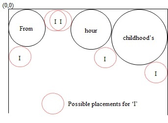

Poe Packing Problem
This app looks at the optimization problem of packing unequal circles into a container through the ruse of a poem.
#optimization #visualization
Problem
Pack a set of unequal circles (based on word length) into a rectangular container, such that all circles are tangent to each other.
Solution
The packing problem is a class of optimization problems that involves finding the maximal density that a set of objects can be placed into a container. Different versions of this problem also go by the knapsack problem or the covering problem.
Consider a rectangular container $H \times W$, with a set of $n$ circles \(C = \{C_{1}...C_{i}...C_{n}\}\) of unequal radius \(\{r_{1}...r_{i}...r_{n}\}\) - proportional to the word they encapsulate - where each circle is placed \(C_{i} = (x_{i}, y_{i}, r_{i})\). The constraints on the optimization can be stated as:
- Unequal circles placed in the container should not extend outside the container
- \(y_{i} - r_{i} \geq 0\), \(\forall i \in \{1,...,n\} \)
- \(y_{i} + r_{i} \leq H\), \(\forall i \in \{1,...,n\} \)
- \(x_{i} - r_{i} \geq 0\), \(\forall i \in \{1,...,n\} \)
- \(x_{i} + r_{i} \leq W\), \(\forall i \in \{1,...,n\} \)
- Unequal circles cannot overlap each other
- \(\sqrt{(x_{i} - x_{j})^{2} + (y_{i} - y_{j})^{2}} - r_{i} - r_{j} \geq 0 \), \(\forall i \neq j \in \{1,...,n\} \)
- Retain the structure of the poem, where possible
Figure 1. Layout of rectangular container with first two circles placed
As shown in Figure 1, the first two circles are placed in opposite corners of the container. Possible placements for subsequent circles are determined by finding
all locations in the container that place the new circle tangent to an existing circle and a side (top, left or right) or tangent to two existing circles -
this is done by function findPlacements() and function findTangency(), as shown in Figure 2.
A hole degree $\lambda$ is determined by calculating the distance of the new circle from all other placed circles and the sides of the rectangle (not including
the ones that the placement option is tangent to).
The optimization rule looks to find the placement option with the maximum hole degree $\lambda$ for each circle: \(\lambda = (1 - \frac{d_{min}}{r_{i}}) \). Once all circles are placed in the container the process is complete with success, if a circle could not be placed then the process returns with failure.
Figure 2. Optimized placement options for third word ('I')
The pseudocode used in the function poemCirclePacking() is provided below:
01 function poemCirclePacking() 02 place first two circles in opposing corners 03 for each remaining circle (n - 2) 04 calculate all possible places for the next circle 05 for all placement options 06 for all other circles in the container 07 calculate dist to other circles in the container 08 calculate lambda 09 select the place with max lambda 11 place the new circle in the place determined
Concluding Thoughts
As a NP-hard problem this is certainly not suited for JS but I made the choice for the sake of the animation and HTML5 audio. If you're going to try this on your own I'd advice using something more practical like Py, R or Matlab (esp. if the number of circles / words are more than 70). For more check out the following papers:
- Kubach, T., Bortfeldt, A., Gehring, H.: Parallel greedy algorithms for packing unequal circles into a strip or a rectangle. Cent. Eur. J. Oper. Res. 17, 461-477 (2009)
- Huang, W.Q., Li Y., Li, C.M., Xu, R.C: New Heuristics for packing unequal circles into a circular container. Comput. Oper. Res. 33, 2125-2142 (2006)